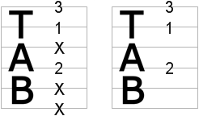
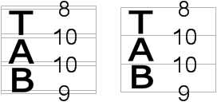

Regarding the Tab View you can set the following preferences:
Here you can specify whether or not muted strings shall be marked with an "X" on the tablature.

Here you can specify whether or not doubled strings shall be drawn as doubled lines.
